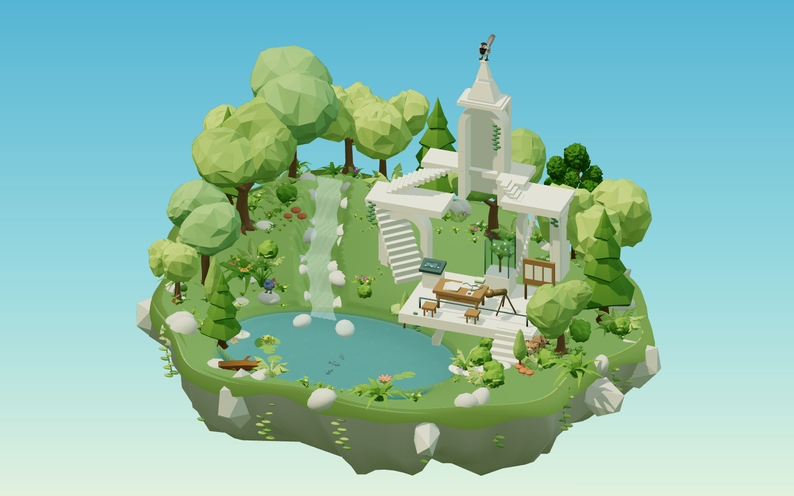

01 / INTERACTIVE ART
树上花火
把旅行中的一眼，变成可回应的画面
在普洱看见路边像烟花一样的草，我想保留那种细小、轻盈的感觉，而不是做一场铺满屏幕的烟火秀。
我的判断让靠近成为触发，而不把点击按钮放在作品外。大花散开、小花轻摆，用不同强度的反馈保留画面的安静。
实现与分工
基于 p5.js 的花枝与粒子动画，借助 AI 辅助代码实现与修改；我提供意象、交互方向并通过观看和试用判断效果。种子控制初始布局，交互后的散落仍随操作变化。
复盘与学习
“随机”并不等于自然。稳定的构图、大小层次、衰减和留白共同决定节奏。下一步可补触屏引导与减少动态选项；目前没有正式可用性测试结论。
02 / CREATIVE TOOL
OC 灵感骰子
先帮创作者动笔，不替创作者定稿
角色构思常卡在“他到底是怎样的人”。工具将印象、内核、外貌、习惯、矛盾、追求、恐惧各抽一项，再配一句核心意象，给出可继续解释的起点。
我的判断不必每次抽取都调用大模型。固定词库配合随机组合，能即时响应、离线使用，也方便控制短句的风格与边界。
实现与分工
代码中现有 579 条词条，分为七个角色维度和一类内核句；前端随机组合，不是实时 AI 生成。AI 辅助实现与整理，人负责设定维度、试用和判断；现有材料不足以逐条认定词条来源，不标为全部手写。
收藏使用本机 localStorage，复制输出纯文本。词条数量是当前实现规模，不是用户量或使用效果。
复盘与学习
组合可能重复，也可能互相冲突；创作者需要筛选、解释和改写。定向锁定某个维度、重复控制与跨设备收藏是可继续探索的方向，目前未实现。
03 / MAKING OF
小岛作品集：
让空间承载内容，而不只是一张好看的图。

小岛版真实网页场景。点击查看大图。从参考图、动物生成与植物资产整合，到动态网页、物品入口和公开访问。这是一个在视觉表达、交互理解与设备负担之间持续取舍的过程。
LOOK先确定画面语言
用配色与光影参考统一方向，调整树木、石头、水面与花草。生成动物和购买的植物资产共同构成场景，不把资产整合描述为全部手工建模。
FEEL动作要符合直觉
鱼倒游、机械转圈、鸟头大幅扭动都曾破坏自然感。修改方向是更少的鱼、正确朝向、轻微翘尾与局部动作，而不是让所有物体持续运动。
USE找到内容才算成立
入口不明显时，加入开场推进与物品附近的悬浮提示；移除坐标和动物说明等干扰，让浏览者从“看场景”走向“读作品”。
我的判断：流畅不能只靠降低画质
过度降清晰度会损失画面。我更希望从资产负担、渲染分辨率、阴影和动态数量之间寻找平衡；实际表现仍依赖设备与浏览器，不承诺所有设备稳定高帧率。
AI 分工与复盘
我负责参考方向、体验反馈和取舍，AI 辅助网页实现、动作与问题排查。模型生成不等于骨骼动画，能运行也不等于访问稳定；部署中遇到访问拦截后转向 GitHub 托管。
这部分是基于实际制作反馈整理的过程回顾，不是性能基准报告。下一步值得补充同场景、同设备的性能对照与入口可发现性测试。
打开小岛版作品集 ↗